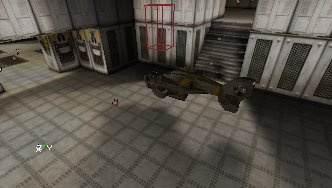
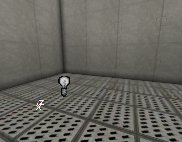
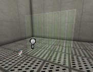
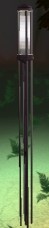
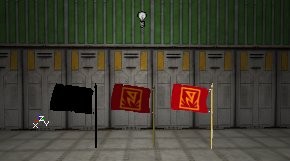
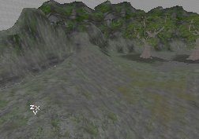
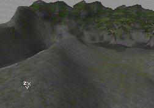

UDN
Search public documentation:
LightingOnSurfacesKR
English Translation
日本語訳
Interested in the Unreal Engine?
Visit the Unreal Technology site.
Looking for jobs and company info?
Check out the Epic games site.
Questions about support via UDN?
Contact the UDN Staff
日本語訳
Interested in the Unreal Engine?
Visit the Unreal Technology site.
Looking for jobs and company info?
Check out the Epic games site.
Questions about support via UDN?
Contact the UDN Staff
표면의 조명
문서 요약: LightActor들이 어떻게 다양한 종류의 도형에 영향을 미치는지 보여주는 안내. 문서 변경 내역: 최종 업데이트 Jason Lentz (DemiurgeStudios?)- 좀 더 다루기 쉬운 문서들로 분리함. 원저자- Lode Vandevenne (UdnStaff)서론
조명은 여러가지 다른 종류의 도형에 다양한 방식으로 영향을 미칩니다. 이 문서에서는 각각의 케이스가 어떻게 원치 않는 결함을 피하는 한편 이용할 수 있는 다른 기능들을 십분 활용하는데 도움이 되는지에 대해 개괄적으로 설명합니다.BSP의 조명
에디터는 Rebuild Lighting(조명 재빌드) 과정 중에 BSP의 표면에 라이트맵을 만듭니다. 이것은 표면에, 특히 High Shadow Detail을 가진 표면에 매우 현실감 있는 그림자를 만듭니다. 이러한 라이트맵들의 이점은 보기가 좋다는 점입니다. 단점은 실시간으로 계산할 수 없다는 점입니다. BSP 표면은 다른 BSP 표면으로부터 그림자를 받으며, 정적 메쉬의 Display 속성에서 bShadowCast가 True일 경우에는 이 정적 메쉬로부터 그림자를 받습니다.
빛은solid, semisolid 및 nonsolid 브러쉬에 의해 중단됩니다. 빛은 단면 시트 브러쉬의 보이지 않는 면을 통해 비치며, 브러쉬의 다른 면을 통해서는 비치지 않습니다. 또, 시트가 아닌 nonsolid 브러쉬 내에 빛을 배치하면, 그 빛은 이를 통해 비칩니다. 빛은 투명 표면을 통해 비치지만, 변조된 표면을 통해서는 비치지 않습니다. 빛이 투명 표면을 통과할 때는, 마치 표면이 전혀 없는 것처럼 통과합니다. 투명 표면에 의해 착색되지도 않습니다. 광선은 마스크된 텍스처의 보이지 않는 부분을 통과하므로, 그림자는 마스크된 텍스처의 모양을 나타내게 됩니다: 가끔 조명을 재빌드할 때 마스크된 텍스처 자체가 까맣게 될 때가 있습니다. 이럴 때는 마스크된 텍스처를 Unlit으로 설정하면 원래대로 됩니다.
조명은 또한 투명 표면의 투명도를 결정합니다: 빛을 더 많이 받을수록 표면이 더 불투명해집니다; 빛이 적을수록 더 보이지 않게 됩니다. 맵에 투명한 표면이 있는데, 주변의 조명과는 별도로 투명도를 다소 조정하고 싶다면 이를 Special Lit으로 설정하고 그 옆에 bSpecialLit빛을 추가하면, 표면의 투명도를 그 빛으로 콘트롤할 수 있습니다. 예를 들면, 아래 그림의 방 한가운데는 사실 투명한 표면이 있지만 빛을 전혀 받지 않고 있습니다. 투명하지 않은 표면은 검정색이 되지만, 여기서는 보이지 않게 됩니다:
가끔 조명을 재빌드할 때 마스크된 텍스처 자체가 까맣게 될 때가 있습니다. 이럴 때는 마스크된 텍스처를 Unlit으로 설정하면 원래대로 됩니다.
조명은 또한 투명 표면의 투명도를 결정합니다: 빛을 더 많이 받을수록 표면이 더 불투명해집니다; 빛이 적을수록 더 보이지 않게 됩니다. 맵에 투명한 표면이 있는데, 주변의 조명과는 별도로 투명도를 다소 조정하고 싶다면 이를 Special Lit으로 설정하고 그 옆에 bSpecialLit빛을 추가하면, 표면의 투명도를 그 빛으로 콘트롤할 수 있습니다. 예를 들면, 아래 그림의 방 한가운데는 사실 투명한 표면이 있지만 빛을 전혀 받지 않고 있습니다. 투명하지 않은 표면은 검정색이 되지만, 여기서는 보이지 않게 됩니다:

이제 빛의 LightBrightness를 점점 높게 설정할수록 표면이 점점 더 잘 보이게 됩니다:

 채색 빛을 사용하면 더 많은 효과를 얻을 수 있습니다:
채색 빛을 사용하면 더 많은 효과를 얻을 수 있습니다:

정적 메쉬의 조명
최상의 결과를 얻으려면 정적 메쉬에 대해서도 조명을 재빌드할 필요가 있습니다. 조명은 정적 메쉬의 모든 표면에 대해 계산되므로 빛을 향하고 있는 표면만이 lit됩니다. 한 예로 아래의 작은 정적 메쉬 큐브를 보십시오: 이것은 정적 메쉬에 라이트맵이 없다는 것을 의미하며, 따라서 이는 BSP 표면이 받은 것 같은 훌륭한 그림자를 받지 않습니다. 한 예로, 아래의 스크린샷에서 왼쪽 맨 아래의 브러쉬는 정적 메쉬이고 위쪽에 있는 브러쉬는 BSP입니다 (엔진의 기본 텍스처를 가지고 있는 두 개의 브러쉬를 말합니다). 조명의 정면에는 그림자를 만들기 위한 막대가 놓여져 있지만, 정적 메쉬에서는 이 그림자가 보이지 않습니다:
이것은 정적 메쉬에 라이트맵이 없다는 것을 의미하며, 따라서 이는 BSP 표면이 받은 것 같은 훌륭한 그림자를 받지 않습니다. 한 예로, 아래의 스크린샷에서 왼쪽 맨 아래의 브러쉬는 정적 메쉬이고 위쪽에 있는 브러쉬는 BSP입니다 (엔진의 기본 텍스처를 가지고 있는 두 개의 브러쉬를 말합니다). 조명의 정면에는 그림자를 만들기 위한 막대가 놓여져 있지만, 정적 메쉬에서는 이 그림자가 보이지 않습니다:
 정적 메쉬에 이동할 수 있는 기능이 있다면 (그 액터의 Default Properties에서 bStatic = False 인 경우), 조명이 정적 메쉬에서 실시간으로 계산되므로 이것이, 예를 들어, 빛을 향해 움직이면 점점 밝아집니다.
정적 메쉬 자체는 BSP 상에 그림자를 만들지만, 다른 정적 메쉬나 그 자체 위에는 그림자를 만들지 않습니다.
정적 메쉬상의 조명은 더 이상 피벗 포인트에 의존적이지 않으며, 대신 경계 박스에 의존적입니다. 따라서 피벗 포인트를 뜻하는대로 사용할 수 있습니다.
브러쉬를 정적 메쉬로 전환하는 경우에는 "Special Lit" 설정을 잃게 되므로 정적 메쉬에서 Special Lit을 사용할 수 없습니다. Unlit은 여전히 사용할 수 있으므로, BSP 브러쉬에서 Unlit인 표면은 모두 정적 메쉬에서도 Unlit이 됩니다.
정적 메쉬를 통해 빛의 코로나를 비추게 하고 싶다면 (예를 들어 램프 내에 코로나를 배치하는 경우), 정적 메쉬의 bBlockZeroExtentTraces를 False로 설정하십시오. 그래야 코로나를 볼 수 있게 됩니다. 물론 Display의 bShadowCast도 false로 설정해야 빛이 정적 메쉬를 통해 비추이게 됩니다.
정적 메쉬에 이동할 수 있는 기능이 있다면 (그 액터의 Default Properties에서 bStatic = False 인 경우), 조명이 정적 메쉬에서 실시간으로 계산되므로 이것이, 예를 들어, 빛을 향해 움직이면 점점 밝아집니다.
정적 메쉬 자체는 BSP 상에 그림자를 만들지만, 다른 정적 메쉬나 그 자체 위에는 그림자를 만들지 않습니다.
정적 메쉬상의 조명은 더 이상 피벗 포인트에 의존적이지 않으며, 대신 경계 박스에 의존적입니다. 따라서 피벗 포인트를 뜻하는대로 사용할 수 있습니다.
브러쉬를 정적 메쉬로 전환하는 경우에는 "Special Lit" 설정을 잃게 되므로 정적 메쉬에서 Special Lit을 사용할 수 없습니다. Unlit은 여전히 사용할 수 있으므로, BSP 브러쉬에서 Unlit인 표면은 모두 정적 메쉬에서도 Unlit이 됩니다.
정적 메쉬를 통해 빛의 코로나를 비추게 하고 싶다면 (예를 들어 램프 내에 코로나를 배치하는 경우), 정적 메쉬의 bBlockZeroExtentTraces를 False로 설정하십시오. 그래야 코로나를 볼 수 있게 됩니다. 물론 Display의 bShadowCast도 false로 설정해야 빛이 정적 메쉬를 통해 비추이게 됩니다.


메쉬의 조명
메쉬 상의 조명은 정적 메쉬 상의 조명과 매우 비슷합니다.단, 메쉬 상의 조명은 실시간입니다. 메쉬의 속성에서 Display를 확장하십시오. 여기서 AmbientGlow를 사용하면 메쉬를 더 밝게 할 수 있습니다. 예를 들어 AmbientGlow를 128로 설정하면, 메쉬는 이 값이 0일 때보다 훨씬 밝아집니다. AmbientGlow가 255일 때, 메쉬는 완전한 밝기가 됩니다. 아래의 스크린샷은 AmbientGlow가 0, 128 그리고 255인 메쉬를 차례로 보여줍니다.
메쉬의 속성에서 Display를 확장하십시오. 여기서 AmbientGlow를 사용하면 메쉬를 더 밝게 할 수 있습니다. 예를 들어 AmbientGlow를 128로 설정하면, 메쉬는 이 값이 0일 때보다 훨씬 밝아집니다. AmbientGlow가 255일 때, 메쉬는 완전한 밝기가 됩니다. 아래의 스크린샷은 AmbientGlow가 0, 128 그리고 255인 메쉬를 차례로 보여줍니다.
 Display 에는 bUnlit이라는 속성도 있습니다. 이것을 true로 설정하면 메쉬는 모든 조명을 무시하며, 오직 AmbientGlow 에 의해서만 그 밝기가 결정됩니다. 다음 스크린샷도 AmbientGlow가 0, 128 그리고 255인 메쉬를 차례로 보여주고 있습니다:
Display 에는 bUnlit이라는 속성도 있습니다. 이것을 true로 설정하면 메쉬는 모든 조명을 무시하며, 오직 AmbientGlow 에 의해서만 그 밝기가 결정됩니다. 다음 스크린샷도 AmbientGlow가 0, 128 그리고 255인 메쉬를 차례로 보여주고 있습니다:

지형의 조명
지형의 조명에서 가장 중요한 방법은 SunLight?(태양광)을 비추는 것입니다. 사실 지형에는 태양광을 사용해야 합니다. 그렇지 않으면 밋밋하고 따분해 보입니다. 예를 들어 아래의 첫 스크린샷은 SunLight이 사용되지 않고 Ambient Lighting(주변 조명)만 사용된 것입니다. 두 번째 스크린샷에는 태양광이 있고 주변 조명은 없습니다:

주변 조명(ZoneLight)은 지형의 그림자 부분을 좀 더 밝게 하는데 사용될 수 있습니다. 보통의 빛으로도 지형을 밝게 할 수 있지만, 지형을 완전히 조명하기 위해서는 수백개의 조명 액터가 있어야 할 것입니다.